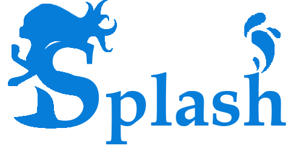

RTOS Splash Schematic Editor
(NEW_FILENAME)
v0.7.2
File
New
Open
Save (Download)
Save As (Download As)
Edit
Align
Options
Grid
Guidelines
Snapping
Help
About
×
RTOS Splash Schematic Editor
A graphical programming framework named
Splash
that explicitly addresses the programming challenges that arise during the development of an autonomous machine. We set four design goals to solve these challenges. First, Splash must provide an effective programming abstraction that supports the stream processing of an autonomous machine. Second, it must enable programmers to specify genuine, end-to-end timing constraints and monitor the violation of such constraints. Third, it must support exception handling, mode change and sensor fusion. Finally, it must support performance optimization and tuning during system implementation[1].

[1] Soonhyun Noh and Seongsoo Hong, "Splash: A Graphical Programming Framework for an Autonomous Machine," The 16th International Conference on Ubiquitous Robots (UR 2019) , pp. 660-666, Jun 2019
http://redwood.snu.ac.kr
Schematic
BuildUnit
Json
Build Unit
Add BuildUnit
Remove BuildUnit
Name:
Color:
View:
Only view checked
build unit
Fusion Operator
key :
Add FusionRule
Remove FusionRule
Name:
Optional #:
Set
Correlation:
Set
InputPort key:
Mandatory
Optional
Don't care
Log Console
Property
Language Construct Attribute
Node/Link Property
Confirm
Overview